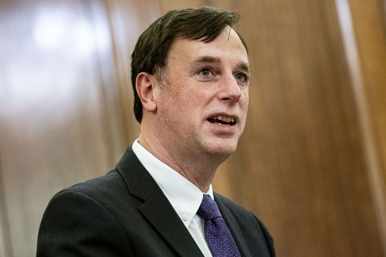
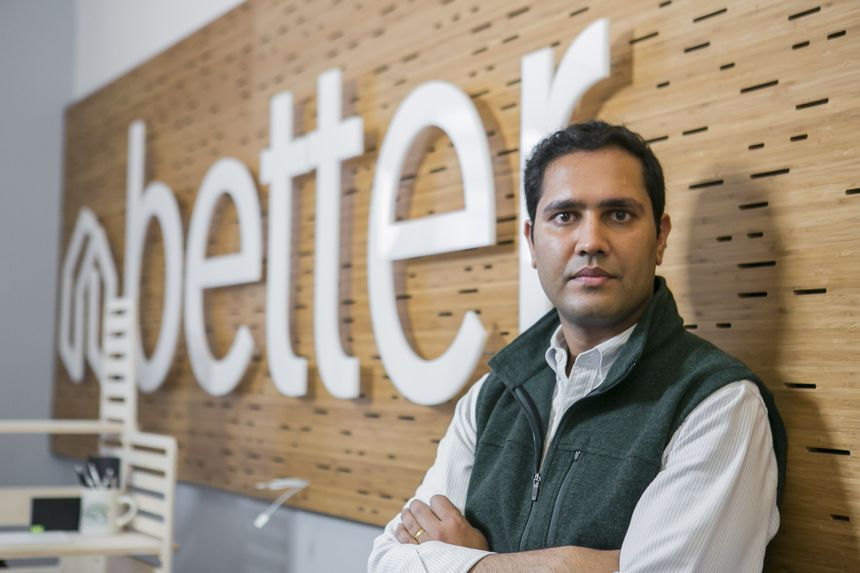
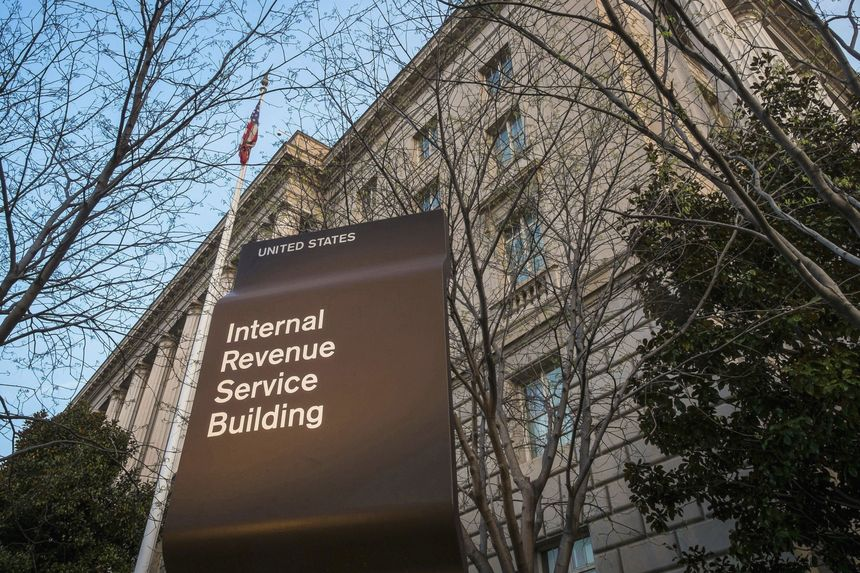
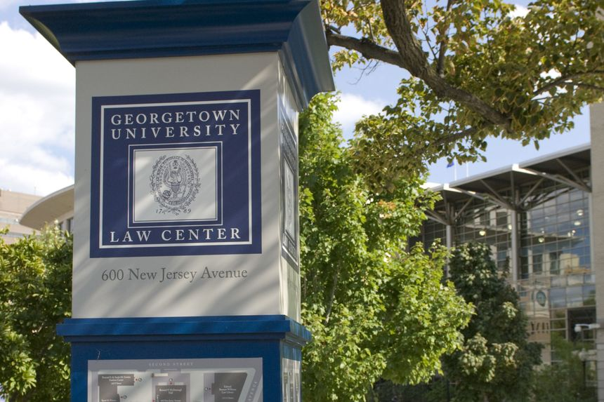
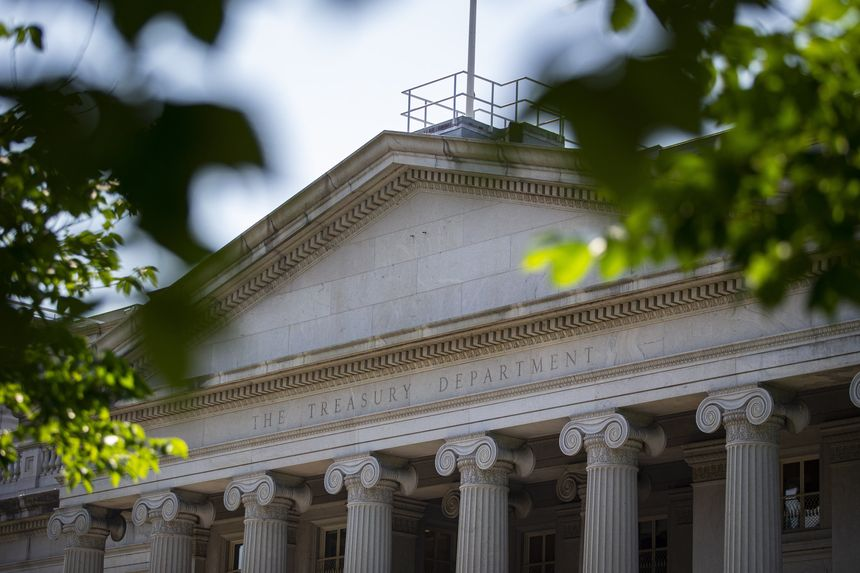

| 时间 | 分类 | 标题 | 副标题 | 正文 | 图片 |
|---|---|---|---|---|---|
| 2022-06-07 20:14:00 | Pro Cyber News | Russian Cyber Threat Remains High, U.S. Officials Say | American intelligence points to attacks that have been actively planned, with only the timing of their execution in question, a senior NSA official said |  | |
| 2022-06-07 19:38:00 | Deals | Advisory Firm Teneo Near Deal to Buy WestExec Advisors | A deal would expand the firm’s focus on geopolitical and policy consulting | Teneo Holdings LLC is close to a deal to buy an advisory firm that would expand the well-known public relations firm’s focus on geopolitical and policy consulting. Teneo could finalize a deal to buy a majority stake in Washington, D.C.-based WestExec Advisors as soon as Wednesday, according to people familiar with the matter. |
|
| 2022-06-07 18:54:00 | Markets | Better.com Misled Investors Ahead of Stalled SPAC Deal, Former Executive Alleges | Departed executive Sarah Pierce says she was retaliated against for raising concerns | Online mortgage lender Better.com and its Chief Executive Vishal Garg allegedly misled investors in financial filings and other representations it made as it attempts to go public, according to a lawsuit filed Tuesday by a former top executive at the company. Sarah Pierce, Better.com’s former executive vice president for sales and operations and one of its top executives, said Mr. Garg and the company allegedly misrepresented Better.com’s business and prospects to keep investors onboard with a planned merger with a special-purpose acquisition company, or SPAC. The deal was agreed to last May and has yet to close. |
 |
| 2022-06-07 18:44:00 | Opinion | What Do We Do About the Mexican Border? | Students discuss immigration, both legal and illegal. | ||
| 2022-06-07 18:43:00 | Opinion | The Chinese Navy’s Great Leap Forward | A base in Cambodia is the latest sign of Beijing’s global military ambition. | First by stealth, then by degrees, and now by great leaps, China is building a blue water navy and a network of bases to extend its military and political influence. A new secret Chinese military base in Cambodia ought to wake up America’s political class—including the U.S. Navy brass—to what is fast becoming a global Chinese challenge. The Washington Post on Monday cites Western officials about the facility under construction at Cambodia’s Ream Naval Base on the Gulf of Thailand. The Journal reported in 2019 that Cambodia and China had secretly agreed to let the Chinese military use a naval base in the Southeast Asian nation. China and Cambodia denied it at the time. |
|
| 2022-06-07 18:40:00 | Opinion | The World Health Organization’s Climate Neurosis | The global health shop says eco-anxiety is an urgent problem. | Measles cases are spiking globally. More than 1,000 monkeypox cases have been reported in 29 countries, and children around the world are developing hepatitis for unknown reasons. And what is the World Health Organization focused on? Climate change, naturally. The WHO on Friday published a report on the potential mental-health impact of climate change, and better see your psychiatrist before it’s too late. “There are gaps in understanding the impact of climate change on mental health and psychosocial well-being, but current knowledge is sufficient to act!” the 16-page report says. When do knowledge gaps ever stop climate lobbyists from demanding that governments grab more power? |
|
| 2022-06-07 18:37:00 | Opinion | The Parental School-Board Revolt Continues | Ballotpedia finds voters delivered a message to incumbents in April. | The political fallout from school closings and curriculum battles continues, as school board incumbents are losing at an unusual rate. That’s the news from Ballotpedia, which analyzed recent school board elections in three states. “Incumbents lost at nearly twice the historical average,” the website that tracks election results reported last week. Parents are revolting over how districts handled Covid and how schools teach race and gender. School board candidates campaigned on at least one of these issues in 141 school district elections in Missouri, Oklahoma and Wisconsin. |
|
| 2022-06-07 18:34:00 | Opinion | Covid Fraudsters Are Still At Large | Scammers took billions in pandemic aid, and unraveling it is a big job. | As a rule of thumb, the faster the government tries to shovel out taxpayer money, the more it ends up helping swindlers buy cars and sunny vacations. The Covid pandemic was a 100-year event that required quick action, but the wild fraud in federal assistance programs deserves years of after-the-fact scrutiny. The Small Business Administration (SBA) was in charge of the $814 billion Paycheck Protection Program, and a report last month from its inspector general is a bracing read. PPP provided forgivable loans to keep workers paid and businesses whole while the economy went into a government-ordered cryogenic freeze. To get the money into businesses quickly, local banks were authorized to approve PPP claims. |
|
| 2022-06-07 18:18:00 | Risk & Compliance Journal | Ropes & Gray Group Hires Former DOJ Compliance Expert | Hui Chen, who advised criminal prosecutors as the first in-house compliance counsel expert at the Justice Department, will serve as a senior adviser in the law firm’s R&G Insights Lab | ||
| 2022-06-07 18:15:00 | Opinion | Social Security Needs Saving Again | ‘What the hell are bend points?’ a fellow senator asked me in 1983. The answer is still crucial. | Social Security is a perennial crisis. Eighty-three percent of Generation X and 77% of millennials say they worry that the program will run out of money in their lifetimes, according to a June 2021 Harris poll for the Nationwide Retirement Institute. The latest report of the Social Security Trustees backs them up, finding that the Old Age and Survivors Insurance trust fund “will be able to pay scheduled benefits on a timely basis until 2034, one year later than reported last year.” That’s only 12 years from now. When Congress passed the Social Security Act of 1935, 42 people worked for each 65-year-old retiree. The trust fund ran surpluses for years. But as life spans grew longer and birthrates declined, fewer wage earners were called on to support more retirees. By the start of the Covid pandemic, there were only 2.7 workers per retiree. |
|
| 2022-06-07 18:14:00 | Opinion | The Christian Martyrs of Nigeria | Why did the Biden administration lift its designation as a country of concern? | As Christians in Owo, Nigeria, gathered to celebrate Pentecost on Sunday, gunmen burst into St. Francis Xavier Catholic Church and began shooting. Eyewitness reports suggest at least 50 parishioners, including young children, were killed. The shock waves of this massacre are still reverberating through Nigeria’s Christian community, a group already reeling from a flood of recent violence. Four weeks ago a mob of Muslim students beat to death Deborah Samuel, a young Christian woman accused of offending Islam after sharing the message “Jesus Christ is the greatest. He helped me pass my exams” on a WhatsApp messaging group. |
|
| 2022-06-07 18:13:00 | Opinion | Why Black Americans Are Buying More Guns | The people who bear the brunt of rising violent crime are taking steps to protect themselves. | “The issue we face is one of conscience and common sense.” So said Joe Biden last week in a prime-time plea for more Second Amendment restrictions. The president is right on both counts, just not in the way that he and other gun-control enthusiasts imagine. Voters have noticed that cities where shootings occur almost daily also have some of the strictest gun laws. Using common sense, they’ve concluded that more gun-control legislation probably isn’t the solution because criminals by definition don’t respect laws. Many of the same people likewise find it unconscionable that elected officials would make it more difficult for law-abiding residents of high-crime neighborhoods to arm themselves for protection. |
|
| 2022-06-07 18:13:00 | Opinion | The Ukraine War and the Putin Puzzle | Russia’s leader sees the conflict as a way to make sure he dies in office. | Vladimir Putin may have flubbed most of his war aims but he’s arguably achieving the most important, neutralizing Russia’s own urban, educated middle class, the real threat to his regime. Whatever the merits of his complaints about NATO or Western hypocrisy, these are not sensible motives for the war he launched. Destroying the infrastructure and productivity of a territory you propose to annex, alienating its 44 million inhabitants, is not a useful goal except on the way to another goal. |
|
| 2022-06-07 18:03:00 | CMO Today | Customer Experience Is Getting Worse | A year marred by supply-chain delays and staffing shortages has reversed consumers’ improving perceptions of companies and government departments |  | |
| 2022-06-07 17:26:00 | Markets | SEC’s Trading Shake-Up Expected to Face Heavy Opposition | Proposed changes to how individual investors’ stock orders are processed grew out of frenzied trading in meme stocks in 2021 | The Securities and Exchange Commission’s expected changes to U.S. stock-trading rules are likely to prompt fierce opposition from the brokerages and electronic market-making firms that handle small investors’ orders, analysts and traders say. The agency is preparing to propose major changes to the stock market’s plumbing as soon as this fall, The Wall Street Journal reported Monday. SEC Chairman Gary Gensler is expected to outline some of the SEC’s plans Wednesday in a speech. The changes grew out of the frenzied trading in GameStop Corp . and other meme stocks in early 2021, which resulted in heavy scrutiny of the handling of individual investors’ trades. |
|
| 2022-06-07 17:25:00 | Sanctions Take Toll on Laundering Tools Used by Ransomware Gangs | But hackers continue to evade sanctions and find other ways to profit from shakedowns |  |
||
| 2022-06-07 17:20:00 | Opinion | Biden Tax Hike: $3.5 Trillion | The White House economic agenda is the principal threat to growth. | Many investors wonder if the Federal Reserve can manage to tame inflation without sending the U.S. into recession. Perhaps they should worry more about continuing White House efforts to tempt Sen. Joe Manchin (D., W. Va.) into a tax increase. The President’s ambitions for increasing government revenue are not small. Appearing before the Senate Finance Committee on Tuesday, Treasury Secretary Janet Yellen talked about President Joe Biden’s fiscal 2023 budget proposal and his plans to raise taxes on businesses and individuals. The goal, said Ms. Yellen, is to build “a fair and stable tax system.” |
|
| 2022-06-07 16:24:00 | CFO Journal | U.K. Regulator Fines PwC Over Audits of Two Construction Companies | The Financial Reporting Council found lapses in PwC’s audits of Galliford Try and Kier Group | ||
| 2022-06-07 15:34:00 | Real Estate | Commercial Property Sales Slow as Rising Interest Rates Sink Deals | Sector shows first signs of cooling in over a year as higher borrowing costs narrow pool of buyers | Commercial real estate is showing the first signs of cooling in more than a year, disrupted by rising interest rates that are already causing some deals to collapse. Property sales were $39.4 billion in April, which was down 16% compared with the same month a year ago, according to MSCI Real Assets. The decline followed 13 consecutive months of increases. |
|
| 2022-06-07 14:45:00 | Pro Bankruptcy Credit Markets | Treasury Moves to Block U.S. Investors From Buying Russian Debt | New sanctions guidance says U.S. investors aren’t allowed to buy Russian corporate or sovereign debt and can only divest themselves of it to foreign buyers | The U.S. Treasury moved to block U.S. investors from making purchases of Russian debt in secondary markets, an apparent expansion from existing policy that only prohibited purchases of newly issued Russian government debt and some Russian corporate debts. In new guidance, the Treasury Department said U.S. persons remain prohibited from new investment in Russia, which now includes “purchasing both new and existing debt and equity securities issued by an entity in the Russian Federation.” Investors would still be allowed to sell or transfer securities as long as they do so to a non-U. S. counterparty, according to the Treasury, and they can also continue to hold the already issued debt. |
|
| 2022-06-07 13:15:00 | Opinion | The Fed Needs to Take Off Its Core Inflation Blinders | It is knee-deep in the murky waters of climate change, energy policy and sustainability. | Alan Blinder writes that “the Fed can’t do anything about food and energy prices” (“Inflation Isn’t Transitory, but It Isn’t Permanent Either,” op-ed, June 2). That may have been true before, but the Federal Reserve is now knee-deep in the murky waters of climate change, energy policy and sustainability. In 2020 the Fed joined the Network of Central Banks and Supervisors for Greening the Financial System, a group of central banks whose “purpose is to help strengthening [sic] the global response required to meet the goals of the Paris agreement and to enhance the role of the financial system to manage risks and to mobilize capital for green and low-carbon investments in the broader context of environmentally sustainable development.” |
 |
| 2022-06-07 13:15:00 | Opinion | A Lonely Free-Marketeer in the Solar Industry | T.J. Rodgers says no to tariffs, but how about tax credits? | T.J. Rodgers, whom I have admired for years as a free-market advocate who practiced what he preached, makes a convincing case against the pending petition to impose tariffs on solar-panel imports—until his last paragraph (“Tariffs Throw Shade on the Solar Industry,” op-ed, May 25). There he concedes that the 26% rooftop-solar tax credit is a hefty subsidy for solar-panel makers. If tariffs on solar panels are so unfair, why am I required to pay my rich neighbors down the street and around the country a kind of domestic tariff, through my taxes, of nearly $5,000 on their $19,000 rooftop solar systems? |
|
| 2022-06-07 13:14:00 | Opinion | Why I Leave Politics Out of My Preaching | There’s a more valuable message to share: the Gospel. | As one who has also “preached nearly every Sunday of my adult life,” the reason for the absence of advocating one side of the aisle over the other from the pulpit has nothing to do with employment but rather with the purpose of worship (“Why Most Pastors Avoid Politics,” Review, May 28). These topics should be addressed in a forum where there can be discussion with opposing views and in-depth conversation rather than with a pastoral monologue with quips and sound bites, as if one speaks ex officio for God regarding politics. From my Lutheran perspective, the purpose of worship is to preach the Gospel, praise God and administer the sacraments. It would be highly inappropriate and arrogant of me to use that sacred time to espouse my own political agenda. The people of God deserve more than that. |
|
| 2022-06-07 12:48:00 | Opinion | The Beginning of the End for Boris Johnson? Probably Not | Thatcher was driven out after winning a similar vote. But circumstances are different today. | Prime Minister Boris Johnson has described his 211-148 margin of victory in Monday’s no-confidence vote as “decisive” and “conclusive,” but it is neither. In 1990 Margaret Thatcher won by a similar margin (204-152), yet the opposition from within the Conservative ranks was enough to force her to stand down. In 2018 Theresa May won by a wider margin (200-117), only to resign six months later. History suggests that Monday’s vote leaves Mr. Johnson mortally wounded. Yet these are unusual times, and he is an exceptional politician. The vote was not about Mr. Johnson’s policies, disarrayed and unpopular though they are. It was about his greatest strength and weakness—his outsize personality—and his government’s handling of an unprecedented challenge, the Covid-19 pandemic. Its economic hangover shows little sign of abating, and the mood in the U.K., as in other Western democracies, is bitter. The bureaucrats who devised the lockdowns and masking rituals are beyond the public’s wrath, but the elected leaders who took their advice are vulnerable. As President Biden may find in November, Mr. Johnson’s humbling is a foretaste of voters’ revenge. |
|
| 2022-06-07 12:41:00 | Markets | Target Inventory Warning Portends Retail Bloodbath | This summer could be a promotional boon for shoppers but a nightmare for retailers | Target ’s inventory problem is turning out even worse than it expected just a short time ago. Its latest warning could portend a promotional bloodbath among retailers this summer. The retailer on Tuesday lowered its operating-margin guidance for its second quarter to 2%, less than half the margin it telegraphed three weeks ago. The company said it is taking actions to “right-size” its inventory, which will involve more discounts and canceling orders. |
|
| 2022-06-07 11:04:00 | Markets | Fewer Imports, Better Growth | A diminished appetite for goods could reduce imports and boost economic growth in the U.S. | With Americans shifting spending away from goods, fewer imports will be hitting U.S. docks. The U.S. economy could end up growing more quickly as a result. The pandemic set off heavy demand for all manner of consumer goods, as people reduced their spending on things like travel and dining out, tried to make the homes they were hunkered down in more livable, and were provided with government relief payments that made it easier to spend. A lot of those goods were made abroad. |
|
| 2022-06-07 10:36:00 | Markets | The U.S. Dollar Is Looking a Bit Stretched | Microsoft’s warning highlights the downsides of a mighty greenback, but the currency’s strength looks set to wane | The U.S. dollar’s rally has paused. Investors shouldn’t necessarily assume it will resume. The greenback has been an unsurprising beneficiary of the Federal Reserve’s tightening campaign: Higher interest rates drive flows into U.S. bonds and other dollar assets and out of other currencies. Stock-market weakness also has prompted safe-haven buying of dollars, as has Russia’s invasion of Ukraine. |
|
| 2022-06-07 10:00:00 | Management | Four-Day Workweek Gets One of Its Biggest Tests in U.K. | Thousands of employees taking part in one of the largest experiments with a shorter workweek | ||
| 2022-06-07 09:41:00 | Risk & Compliance Journal | Hewlett Packard Enterprise Executive to Lead Justice Department’s Fraud Section | Glenn Leon, a former federal prosecutor, will oversee some of the DOJ’s most significant corporate investigations | ||
| 2022-06-07 09:12:00 | THE EXPERTS | Leadership | It’s Time to Change the Cybersecurity Metaphors We Use | Organizations might benefit by talking more about system “health” and less about the latest “attack” in their continuing “war” with hackers | Pat Muoio is a general partner at SineWave Ventures, where she assesses emerging technologies and makes investment decisions. There’s a lot to be learned from the words we use to describe things. Cybersecurity is a case in point. |
|
| 2022-06-07 08:00:00 | Markets | Blackstone, Other Large Private-Equity Firms Turn Attention to Vast Retail Market | Firms court individuals with $1 million to $5 million in investible assets | Private-equity firms have spent decades raking in giant sums from pension funds and other big institutions. Now they are going hat in hand to a different kind of investor: everyday millionaires. Some of the biggest firms, including Blackstone Inc., Blue Owl Capital Inc., Apollo Global Management Inc. and Ares Management Corp. , have created a host of new products aimed at people with $1 million to $5 million in investible assets and are hiring armies of staff to market them to private banks and independent financial advisers. |
|
| 2022-06-07 08:00:00 | Real Estate | Cipriani to Get New Lifeline With Money From Hedge Fund | King Street Capital said to be in advanced talks to refinance about $150 million of operating debt | A New York City investment fund is poised to provide a financial boost to Cipriani, nearing a deal that would refinance loans for the Italian hospitality company’s U.S. operations while helping fund its future expansion. King Street Capital Management is in advanced talks to refinance about $150 million of operating debt held by Cipriani’s U.S. subsidiary, according to people familiar with the matter. |
|
| 2022-06-07 07:03:00 | Markets | India Shows the Challenge in Firming Up SoftBank | Country is a test ground for SoftBank’s new, more tempered investment strategy | Amid a technology bear market, the industry is racing to position itself as having somehow reformed—what venture-capital firm Sequoia Capital last month dubbed a “crucible moment.” But for SoftBank , there may be little defense. SoftBank’s Vision Funds lost about $27 billion for the fiscal year ended March 31. The investment firm blamed much of those losses on poor performance of its public companies beholden to regulatory developments in the U.S. and China. Chief Executive Masayoshi Son has been clear that he expects the current market uncertainty to stay for the foreseeable future, with geopolitical risks a key compounding factor. |
|
| 2022-06-07 06:53:00 | Markets | Deutsche Bank Moves Hundreds of Employees From Russia to Berlin | German lender offered Russian employees and their families to relocate to a new tech development hub | Deutsche Bank AG relocated hundreds of employees from its technology center in Russia to Berlin and decided to make the German capital a tech center for its investment and corporate banking activities. The German lender offered the roughly 1,500 staff who were in Russia the chance to move to Berlin with their families, and about half accepted, according to a person familiar with the move. The bank hasn’t decided what will happen to the Russian center and the staff who decided to stay. Their main task is to develop and maintain software for trading and corporate banking. |
|
| 2022-06-07 06:30:00 | Markets | Stock Futures Slip Ahead of Economic Data | The benchmark 10-year Treasury yield is hovering above 3% | U.S. stock futures edged down ahead of economic data and after the Reserve Bank of Australia spooked investors with a bigger-than-expected interest-rate increase. Futures tied to the S&P 500 declined 0.5%, reversing direction after the broad-market index closed up 0.3% on Monday. Nasdaq-100 futures fell 0.6%, pointing to moderate losses for technology stocks after the opening bell. |
|
| 2022-06-07 06:26:00 | Markets | Boris Johnson Is No Party for Financial Markets | Trading around the no-confidence motion suggests that investors may prefer a chaotic leadership race to the continuing uncertainty generated by the current U.K. government | It isn’t everywhere that the potential ousting of a head of government is celebrated by investors as a step toward political stability. In the case of Britain, they might have a point. The pound was the best-performing major currency Monday after news broke that British Prime Minister Boris Johnson would that evening face a no-confidence vote by lawmakers of his own ruling Conservative Party. The challenge to his leadership follows widespread anger about parties held at Downing Street during the Covid-19 lockdowns. Mr. Johnson ended up hanging on to his job by 211 votes against 148, which may help explain part of sterling’s overnight dip. It regained some ground later on Tuesday. |
|
| 2022-06-07 06:00:00 | Tech and Manufacturing Firms Launch Industrial Cybersecurity Group | Guidance and tools will focus on improving security in critical infrastructure and supply chains |  |
||
| 2022-06-07 05:33:00 | Markets | Good News on Tariffs Won’t Solve Challenges for Solar Stocks | Industry is pressured by rising interest rates and supply-chain obstacles | Solar-power companies were already enjoying a rebound from a nasty selloff when they got a boost from the Biden administration, which said it wouldn’t impose new tariffs on solar imports. Investors in the industry have other things to worry about. Shares of companies that install solar projects such as Sunrun Inc. and Sunnova Energy International Inc. have risen about 20% in the past month, paring some of this year’s declines. The latest gains, on Monday, were tied to the Biden administration’s statement that a U.S. government probe into whether Chinese solar producers are dodging tariffs by routing panels through Cambodia, Thailand, Vietnam and Malaysia won’t result in additional levies. |
|
| 2022-06-07 05:30:00 | Markets | Bayer’s Troubled Monsanto Megadeal Finally Shows Promise | German conglomerate’s agricultural unit thrives as Ukraine war threatens food supplies | Bayer AG’s $63 billion bet on Monsanto Co. is finally showing signs of paying off, as food shortages stoked by Russia’s invasion of Ukraine drive demand for seeds and pesticides to boost global crop production. Among Europe’s best-performing large stocks this year, the German agricultural-chemicals and pharmaceutical giant is up 41%. That is ahead of rivals including BASF SE , which is also based in Germany, and New York-listed Corteva Inc . |
|
| 2022-06-07 05:30:00 | CFO Journal | Companies Keep Libor on the Books Despite Push to New Benchmark | Many businesses continue to hedge debt tied to the troubled interest-rate benchmark, which is set to expire in June 2023 | ||
| 2022-06-07 05:00:00 | Markets | Senators to Propose Industry-Friendly Cryptocurrency Bill | Regulatory framework would spare much of the crypto market from SEC oversight and create favorable tax treatment | WASHINGTON—A pair of U.S. senators were set to propose legislation that would create special exemptions to federal law for some cryptocurrencies, amid an intensifying lobbying push by the industry to avoid existing regulations. Sens. Cynthia Lummis (R., Wyo.) and Kirsten Gillibrand (D., N.Y.) were set to introduce a bill Tuesday dubbed the Responsible Financial Innovation Act, which aims to create a “complete regulatory framework for digital assets.” In a joint press release, they said it would balance the crypto market’s need for guardrails and consumer protections with a desire to promote financial innovation. |
|
| 2022-06-06 20:39:00 | Opinion | How to Spin Failures of the Left | Progressives nationwide are suddenly afraid of San Francisco voters. | This column can’t predict whether the people of San Francisco will finally vote for law and order on Tuesday by recalling District Attorney Chesa Boudin. What’s clear is that media leftists are concerned enough about the possibility that they are already working overtime to explain it away. The City by the Bay is a place where offenses are now so unlikely to be met with strict punishment that last year one resident was comfortable participating in an on-camera interview in front of a local supermarket to explain how easily he had been able to shoplift inside. Not even close to amusing is the city’s surging murder rate. |
|
| 2022-06-06 19:02:00 | Opinion | Cannabis and the Violent Crime Surge | Heavy marijuana use among youths is leading to more addiction and antisocial behavior. | The stigma once attached to marijuana has vanished. Nineteen states have legalized cannabis for recreational use, and politicians of both parties increasingly treat it as harmless. Asked during the 2020 presidential campaign about her pot use in college, Kamala Harris giggled and said marijuana “gives a lot of people joy” and “we need more joy in the world.” But the public needs an honest discussion of its social and public-health risks, which include violence and mental illness. Alex Berenson, author of “Tell Your Children: The Truth About Marijuana, Mental Illness and Violence,” pointed out that the New York Times had curiously removed from an article about the Uvalde school shooting a former co-worker’s recollection that he complained about his grandmother not letting him smoke weed. The Times didn’t append a correction to the story as it might be expected to do when fixing a factual inaccuracy. |
|
| 2022-06-06 19:02:00 | Opinion | The U.S. and Europe Have Different Inflation Problems | It’s more painful on the Continent but more persistent and demand-driven in America. | Leo Tolstoy’s observation that “all unhappy families are unhappy in their own way” applies to the multidecade-high inflation being experienced by countries around the world. The headline inflation numbers are increasingly similar—around 8% in both the U.S. and Europe—but the causes, consequences and treatment remain quite different. In particular, the U.S. has higher underlying inflation—which is potentially more persistent and is appropriately being treated with aggressive monetary tightening. In contrast, more of Europe’s inflation is imported—which makes it more painful than U.S. inflation but also likely more transitory, and so the European Central Bank should follow a comparatively restrained response. The U.S. has had about 3 percentage points more cumulative inflation than the euro area since the onset of the pandemic. But inflation peaked in March in the U.S. and is likely to continue drifting down, while inflation rates have been rising in Europe. In the first four months of the year, inflation rose at a 12% annualized rate in Europe compared with 9% in the U.S. |
|
| 2022-06-06 19:00:00 | Opinion | The High Cost of Constant Covid Testing | Government helped labs earn windfall profits from the pandemic. | Testing labs in the U.S. have been earning windfall profits as a direct consequence of the Covid-19 pandemic. Using tax data from Hawaii, we found that statewide growth in private diagnostic labs’ monthly revenue tracked the volume of Covid-19 PCR tests in lockstep. Between May and December 2020, lab revenue grew at an average of 8% a month. Labs are making more than $10 a test in profit. Why are these profits possible? The American healthcare system let labs set prices for Covid-19 tests well above their costs, costing taxpayers and private insurance companies dearly, for three reasons. |
|
| 2022-06-06 18:59:00 | Opinion | What It’s Like to Be a Victim of Private Planes | Barnstorming is no fun when it’s your barn. | Over the weekend, the pilot of a small plane accidentally entered the airspace above President Biden’s beach house on the coast of Delaware. The Secret Service moved the president to another location until it determined that the plane was harmless. If I were president, the Secret Service would have to go through that routine 10 or 15 times a day. Every day little planes fly over my house in Columbia County, N.Y., from an airport in Great Barrington, Mass. They’d been driving the people over there crazy, so the airport directed the pilots our way. They come overhead flying low, circling the house and buzzing us if they see us in the yard. |
|
| 2022-06-06 18:58:00 | Opinion | Biden’s Green-Energy Industrial Policy | The President has two words to save the world: solar power. | Donald Trump abused his national security power by slapping tariffs on steel and aluminum imports to support domestic producers. Now President Biden is stealing from his predecessor’s industrial policy guidebook by invoking the Defense Production Act to boost domestic green energy. Don’t laugh—the White House wants to make solar panels and heat pumps to stop Vladimir Putin. In rare good news, the President on Monday brought a sigh of relief to U.S. solar-power developers by announcing he wouldn’t impose tariffs for two years on imported solar panels from southeast Asia. Domestic manufacturers say their Chinese competitors are circumventing anti-dumping duties, and a Commerce Department investigation threatened to raise costs for solar projects in which U.S. firms add value. |
|
| 2022-06-06 18:57:00 | Opinion | A Wounded Boris Johnson Fights On | The British Prime Minister survives a no-confidence vote, but his economic blundering is a lesson to Americans on the right. | That Boris Johnson survived Monday’s snap no-confidence vote within his party is a testament to the British Prime Minister’s charisma and cunning. That he faced the vote at all is a sign that he and his Tory Party remain in grave political danger, and for reasons conservatives in other parts of the world can learn from. The intraparty vote was triggered when at least 54 Conservative members of Parliament—15% of Mr. Johnson’s caucus—expressed dissatisfaction with Mr. Johnson’s leadership. It’s a remarkable development only two-and-a-half years after he won a historic parliamentary majority of 80 seats, including districts that had never voted Tory. Mr. Johnson prevailed Monday 211-148, but the fact that 41% of his own party no longer have confidence in him will prove terminal unless he executes a turnaround. |
|
| 2022-06-06 18:56:00 | Opinion | DeSantis Harpoons the Tampa Bay Rays | Vetoing sports subsidies is good policy, but emulating woke cancelers is a mistake. | Florida Gov. Ron DeSantis has picked another fight with progressive corporate America, this time the Tampa Bay Rays baseball team. When he signed the state budget last week, Mr. DeSantis zeroed out $35 million to help build a new site for the Rays’ spring training. “I don’t support giving taxpayer dollars to professional sports stadiums, period,” he said Friday. This is a good policy that too few states emulate, and Florida taxpayers can be grateful that their Governor has a line-item veto and is willing to use it. He vetoed $3 billion in earmarks and pet legislative projects. But Mr. DeSantis also muddied his message by citing another reason to defund the Rays. “It’s also inappropriate to subsidize political activism of a private corporation,” he said. |
|
| 2022-06-06 18:52:00 | Opinion | The Georgetown Law School Purge | Ilya Shapiro resigns as the woke mob sets him up for dismissal. | Optimists have opined that America has reached “peak woke” as a backlash against it grows. Think again, as the experience of Ilya Shapiro demonstrates. Nearby Mr. Shapiro describes his treatment at the hands of Georgetown University Law School, which had hired him to be the executive director of its Constitution Center. Mr. Shapiro is a libertarian-minded legal scholar who sometimes writes for these pages. Georgetown, like most law schools, is dominated by progressives, often of the intolerant and vindictive variety. |
 |
| 2022-06-06 17:38:00 | CFO Journal | Peloton Brings in Amazon, Netflix Veteran as CFO | The fitness-equipment maker has struggled amid shifting consumer-buying preferences | ||
| 2022-06-06 17:14:00 | NewsPlus | ESG Roundup: Market Talk | The latest Market Talks covering ESG Impact Investing | The latest Market Talks covering ESG Impact Investing. Published exclusively on Dow Jones Newswires at 10:00 ET and 17:00 ET. 1546 ET - A Biden administration plan to allow a two-year waiver on some solar import tariffs is expected to mostly benefit the big, utility-scale solar industry, but Evercore says “the US residential solar industry, which has faced a wave of negative macro/regulatory headlines since December 2021, will also likely benefit.” For one thing, it eases panel procurement challenges, and for another it “removes the need to create tariff reserves if the DOC investigation [which created the supply-chain issues leading to the tariff break plan] outcome is unfavorable,” Evercore says in a research note. Sunrun , Sunnova Energy , Sunpower and Enphase Energy are some of the home solar firms that should benefit, it says. (dan.molinski@wsj.com) |
|
| 2022-06-06 16:18:00 | Financial Regulation | SEC Closes In on Rules That Could Reshape How Stock Market Operates | Chairman Gary Gensler expected to outline ideas for improving market efficiency Wednesday | WASHINGTON—The Securities and Exchange Commission is preparing to propose major changes to the stock market’s plumbing as soon as this fall. Chairman Gary Genslerdirected SEC staff last year to explore ways to make the stock market more efficient for small investors and public companies. While aspects of the effort are in varying stages of development, one idea that has gained traction is to require brokerages to send most individual investors’ orders to be routed into auctions where trading firms compete to execute them, people familiar with the matter said. |
|
| 2022-06-06 16:14:00 | CIO Journal | Meta Shakes Up AI Unit Amid Drive for Growth | AI hubs will become part of product groups as a way of turning research into business assets more quickly, and in line with the company’s metaverse aspirations | ||
| 2022-06-06 13:58:00 | Markets | Digital-Payments Growth Has a Ways to Run Yet | The pandemic caused some changes in how consumers pay, but cash and in-person shopping haven’t been pushed aside completely | Cash hasn’t gone away yet. That is actually good news for many payments stocks. One big concern about payment companies has been that the surge in digital transactions and online purchases during the Covid-19 pandemic was a one-time shift in habits that pulled ahead years of growth, leaving much less runway for these stocks. But Visa Chief Financial Officer Vasant Prabhu, speaking at a Bernstein conference late last week, said that based on the company’s best calculations, growth in the conversion of cash to digital through the pandemic was accelerated by maybe only one year. |
|
| 2022-06-06 13:11:00 | Opinion | Zoom School Was No Education for My Math Students | Most in the class tuned out. Now they’re lastingly behind. | In “The Weekend Interview With Edward Glaeser” (May 28), Tunku Varadarajan touches on a subject close to my professional domain: “the unmitigated disaster that remote learning has been for American children.” As a math teacher with 28 years in the trenches, I witnessed that unmitigated disaster. It is obvious that all math courses have a prequel and a sequel. Academic year 2020-21 placed nearly all students in a remote-learning setting. That year, I taught—and I use the term loosely—algebra-I, the prerequisite for geometry and algebra-II. Each day I kept track of the number of students who were actively engaged. All students had the option of clicking on the appropriate Zoom link, then tuning in or tuning out. |
|
| 2022-06-06 13:11:00 | Opinion | The Problem With the ‘Thoughts and Prayers’ of Politicians | The sea split when the Israelites marched forward, not when they prayed for a miracle to split the sea for them. | In “Thoughts and Prayers Do Help” (op-ed, June 1), David Bashevkin urges us to see “prayer and its attending seriousness” as “part and parcel with taking action.” I agree that prayer may be part and parcel of taking action, but it isn’t always. My discomfort as a person of faith with politicians offering “thoughts and prayers” in the wake of school shootings isn’t because I don’t value the potency of prayer, but rather because these statements are offered as a cheap palliative by those who should be effecting meaningful change. Rabbi Bashevkin quotes Lincoln: “I have been driven many times upon my knees by the overwhelming conviction that I had nowhere else to go.” Perhaps this is the issue; our leaders pray, overwhelmed by a conviction that there is nothing else to do, when there is so much yet to be done. |
|
| 2022-06-06 13:10:00 | Opinion | Why Electric Vehicles Are Still the Future | New products don’t wait until all the elements are in place to provide for growth. | Does Russ Andrews (“Electric Vehicles Are on a Bridge to Nowhere,” Letters, May 26) believe that Henry Ford should have had second thoughts about mass-producing autos because there weren’t enough refineries making gas or enough miles of paved roads for them to roll on? Obviously not. New products don’t wait until all the elements are in place to provide for growth. They create demand and opportunities for supporting industries to start and grow. Lithium is in short supply because it wasn’t in great demand. But now it is, and the price will go up, which will motivate entrepreneurs all over the world to start mining and processing. It’s already happening. |
|
| 2022-06-06 12:50:00 | Opinion | America Could Use a Royal Jubilee, if Not a Queen | A country needs a symbol of its greatness that unifies the citizenry and lifts it above politics. | London Watching four days of celebration to mark Queen Elizabeth II’s platinum jubilee, it finally struck me with unexpected clarity: What America needs is a monarch. |
|
| 2022-06-06 12:27:00 | Markets | Investing in Electric-Vehicle Commodities Is Harder Than It Looks | Elliott Management’s $456 million lawsuit against London Metal Exchange for canceled nickel trades highlights problem with buying into trendy but niche battery metals | Nickel might be a good investment given the rise of electric vehicles and the time it takes to bring on new supply. What that means for your portfolio is another question. Hedge fund Elliott Management wants $456 million from the London Metal Exchange for its cancellation of trades during the spectacular short squeeze that followed Russia’s invasion of Ukraine. The LME’s owner, Hong Kong Exchanges and Clearing, is fighting the lawsuit. Officially, nickel hit a 15-year high of about $48,000 a metric ton on the exchange on March 8, according to FactSet. But that excludes roughly $4 billion worth of canceled trades at much steeper prices. |
|
| 2022-06-06 12:17:00 | Markets | Pfizer and Moderna Won’t Get a Shot in the Arm From Toddlers | Approval of Covid-19 vaccine for children under five years old would be good news for some parents, but not necessarily for shareholders | There could soon be as many as two approved Covid-19 shots for the littlest Americans. But investors in vaccine-makers’ shares, which have suffered amid a broader selloff in the biotechnology sector, won’t be able to breathe any easier. Some anxious parents are holding off on a full return-to-normal until their little ones get inoculated. One could therefore be forgiven for thinking there might be a sizable national market for Pfizer - BioNTech and rival Moderna , both seeking authorization from the U.S. Food and Drug Administration this month for children under five years old. |
|
| 2022-06-06 12:01:00 | Markets | Investors Get Back Into Corporate Bonds | While bonds were out of favor for several months, many are now seeing better value in debt markets | Investors are going bargain hunting for beaten-down corporate bonds. That is a reversal from earlier in the year, when investors sold off even the highest-quality debt. The turnaround highlights the tensions pressuring financial markets. In recent weeks, investors have grown more confident about the Federal Reserve’s path for raising interest rates to wrangle inflation—and more worried that, as a result, growth has begun to slow. |
|
| 2022-06-06 08:45:00 | Opinion | Why I Quit Georgetown | The university didn’t fire me, but it abandoned free speech and created a hostile environment. | After a four-month investigation into a tweet, the Georgetown University Law Center reinstated me last Thursday. But after full consideration of the report I received later that afternoon from the Office of Institutional Diversity, Equity and Affirmative Action, or IDEAA, and on consultation with counsel and trusted advisers, I concluded that remaining in my job was untenable. Dean William Treanor cleared me on the technicality that I wasn’t an employee when I tweeted, but the IDEAA implicitly repealed Georgetown’s Speech and Expression Policy and set me up for discipline the next time I transgress progressive orthodoxy. Instead of participating in that slow-motion firing, I’m resigning. |
|
| 2022-06-06 08:31:00 | Markets | Hong Kong’s Property Market Isn’t a One-Way Bet Anymore | City’s property prices have had some dips and bumps but have been more or less irrepressible. That might be about to change. | Rising interest rates in the U.S. and a slowdown in China’s economy are set to deal a double blow to the world’s most expensive housing market. Higher interest rates in developed countries pose risks to housing markets around the globe, which have been fueled by cheap mortgages over the past decade. Even land-hungry Hong Kong—which has long held the dubious title of the world’s priciest real-estate market—may now find it difficult to defy gravity. |
|
| 2022-06-06 07:00:00 | Pro Cyber News | VCs, Tech Firms Want to Raise $1 Million for Bay Area Cyber Education | Facing a shortage of digital defense personnel, a consortium is offering to pay one year of studies for would-be cyber pros in the San Francisco area | ||
| 2022-06-06 06:00:00 | CMO Today | How Direct-to-Consumer Marketers Are Chasing Customers After Privacy Changes | The new marketing playbook includes using original content, outside research and organic posts | ||
| 2022-06-06 05:59:00 | Markets | Stock Futures Rise After Weekly Loss | Investors will watch U.S. inflation report later this week | U.S. stock futures ticked higher, putting markets on track to recover from a muted trading week that ended in losses for major U.S. indexes. Futures for the S&P 500 climbed 1% on Monday, while futures for the Dow Jones Industrial Average rose 0.8%. Contracts for the technology-focused Nasdaq-100 were 1.3% higher. Major U.S. indexes fell Friday after data showed hiring growth slowed in May, though employers still added a strong 390,000 jobs. |
|
| 2022-06-06 05:30:00 | CFO Journal | CFOs Express ‘Serious Concerns’ About Changes to Foreign Tax Credits In Letter to Yellen | Finance chiefs from Coca-Cola, Disney, GE and others warn of the far-reaching impact of foreign tax credit rules that went into effect earlier this year |  | |
| 2022-06-06 05:30:00 | Central Banks Commentary | Derby’s Take: Some Fed Officials See September as Key Moment for Monetary Policy | A number of policy makers say September FOMC meeting time to take stock of rate increases | With Federal Reserve officials draining a great deal of the drama out of the next two policy meetings, their September meeting is shaping up to be the key pivot point for the next stage of interest-rate policy changes. Over recent weeks, a range of central bankers have argued that to lower inflation, they will almost certainly implement half-percentage-point increases at the June and July Federal Open Market Committee meetings. With the Fed having already lifted its target by three-quarters of a percentage point this year, that will have the funds rate target range at between 1.75% and 2% by the end of the July gathering. |
|
| 2022-06-06 05:30:00 | Markets | Pension Funds Push for More Disclosure Rules for Private-Equity, Hedge Funds | SEC urged to proceed with a proposed rule that would ensure private-fund investors receive annual audits and quarterly statements, among other requirements | Pension plans and other institutional investors are embracing a federal proposal that would force hedge funds and private-equity funds to provide more disclosures to investors. University endowments, insurance funds and retirement funds serving teachers and firefighters are urging the Securities and Exchange Commission to move forward with a proposed rule that would ensure private-fund investors receive annual audits and quarterly statements. The rule, which has been heavily criticized by the private funds and Republicans, would also prohibit fund managers from passing along certain legal costs and limit the funds’ ability to insulate themselves from lawsuits. |
|
| 2022-06-06 04:46:00 | Markets | Elliott Management Sues London Metal Exchange Over Nickel Crisis | Exchange’s parent says claim by U.S. investment firm is without merit | Activist hedge-fund manager Elliott Management Corp. sued the London Metal Exchange for more than $456 million, after the exchange earlier this year suspended nickel trading and canceled some trades following wild swings in the metal’s price. The lawsuit is a fresh headache for the LME, whose actions had already drawn criticism from some market participants and prompted a review by British financial regulators. |
|
| 2022-06-05 21:48:00 | Finance | Carl Icahn Dropping Proxy Fight Over Pig Treatment at Kroger | Investor says in letter to shareholders he has concluded he was likely to lose the campaign, as he did with McDonald’s | Carl Icahn is dropping a proxy fight focused on the treatment of pregnant pigs at grocery-chain Kroger Co. after concluding he is likely to lose as he did a similar fight at McDonald’s Corp. last month. “I congratulate the McDonald’s team on their victory in this proxy engagement and, after much contemplation, given the company’s financial position, I believe the same outcome will result at Kroger,” he said in a letter he plans to send to Kroger and McDonald’s shareholders that was viewed by The Wall Street Journal. |
|
| 2022-06-05 18:14:00 | Opinion | Breaking Big Tech Bad | A Senate antitrust bill would harm consumers and U.S. innovation. | When lawmakers and regulators move too fast, they break things. But then breakage seems to be the main point of a bipartisan group of Senators pushing legislation that would punish Big Tech companies. The bill has received little debate, yet Majority Leader Chuck Schumer wants to hold a vote pronto. Giant businesses have always emerged during eras of technological upheaval. But their dominance faded over time amid competition or business mistakes—think of General Motors , Sears, Xerox , or IBM . Note that Big Tech stocks have plunged this year in part owing to slower growth and monetary tightening. |
|
| 2022-06-05 18:12:00 | Opinion | China Buzzes Australia’s New Prime Minister | A Chinese fighter jet intercepts an Aussie surveillance aircraft on a routine mission in the South China Sea. | Anthony Albanese has been Australia’s Prime Minister for less than a month, but China is already testing whether he’ll stand up to intimidation as well as his predecessor did. Australia said Sunday that on May 26 a Chinese fighter jet intercepted an Australian surveillance aircraft conducting a routine mission in international airspace near the South China Sea. Australia’s Defense Ministry said the Chinese jet pulled alongside the aircraft, then moved in front, releasing flares and chaff that “resulted in a dangerous maneuver which posed a safety threat” to the Australian plane and its crew. Australia lodged a complaint with Beijing, but this was probably no accident. |
|
| 2022-06-05 18:10:00 | Opinion | Another Spending Siren for Joe Manchin | Why expand or create entitlements when Medicare and Social Security are going broke? | Progressives are still trying to coax West Virginia Sen. Joe Manchin into supporting a partisan tax-and-spending bill. How rude of the Medicare and Social Security Trustees to interrupt this serenade with a reminder last week that the entitlements are going broke. The 2022 Medicare Trustees report’s silver lining is that the hospital insurance fund is expected to stay solvent until 2028, two years longer than projected last year. “This is encouraging news,” said Texas Democratic Rep. Lloyd Doggett. Alas, a major reason is that Covid killed many elderly with expensive-to-treat health conditions. |
|
| 2022-06-05 18:08:00 | Opinion | The Pizza Hut Tax War Is Finally Over | After 15 years of legal fighting, a final victory in state Supreme Court. | Belated congratulations to Gene Bicknell, who recently won a 15-year tax fight at the Kansas Supreme Court. In 2006 Mr. Bicknell sold what was once the world’s biggest megachain of Pizza Huts, with something like 800 stores and 22,000 employees. That year Pizza Hut’s Super Bowl ad featured the singer Jessica Simpson crooning about a crust made of 28 “poppable” cheesy bites. Mr. Bicknell has been battling the Kansas Revenue Department ever since. He originally lived there but in 2003 sought to switch his residency to Florida, which has no income tax. Kansas disputed the move and dunned him $43 million, including on the Pizza Huts. There were multiple trials and trips to appeals courts. “We hold Gene was domiciled in Florida,” the Kansas Supreme Court ruled last month. |
|
| 2022-06-05 16:54:00 | Opinion | How Biden Can Prepare for a Midterm Election Bruising | His predecessors have faced big Congressional losses. Here’s what he can learn from their mistakes. | In 1986 the Republican Party lost the Senate majority, marking the first time in more than three decades that a sitting president’s party had lost a chamber of Congress. In the 3½ decades since, presidents have seen their parties lose control of one or both houses in five midterm elections, and every president since Bill Clinton has experienced such a loss. Political experts take it as a foregone conclusion that President Biden’s Democrats will face that same fate this fall. Is there anything a president can do? Mr. Biden and his team would be wise to study the experiences of his predecessors. History provides a playbook for what to do to prepare for a midterm reckoning—and what to do should the opposing party take control. |
|
| 2022-06-05 16:51:00 | Opinion | A New Threat in Iraq to Peace in the Middle East | On his coming trip, Biden needs to confront Baghdad on its new law barring contact with all Israelis. | The gains the U.S. has made toward peace between Israel and its neighbors are in danger. The Abraham Accords, established in 2020, have created economic and diplomatic benefits for the four countries that agreed to normalize relations with the Jewish state. But an opposing coalition has effectively formed out of states, political parties and militias allied with Iran, Qatar and Kuwaiti extremist financiers. Last month Iraq’s Parliament passed an “anti-normalization law” prescribing death for the slightest contact with an Israeli citizen. Last week saw calls to enact similar laws by Parliament members and militias from North Africa to the Gulf. Yemen, controlled by the Iran-backed Houthi movement, passed similar legislation Thursday. Ahead of President Biden’s trip to Israel, the Palestinian areas, Saudi Arabia and possibly other Arab states, this axis of resistance threatens to block diplomatic efforts to expand the Abraham Accords or even to reverse some of the progress. The administration must help Arab peace advocates stop it. |
|
| 2022-06-05 16:51:00 | Opinion | The White House Keeps Stoking Covid Fears | Covid is ‘a far greater threat to kids than the flu is,’ Ashish Jha claims, citing a flawed study. | ‘I’ve been a huge advocate of keeping schools fully open to in person education since October of 2020,” Ashish Jha, the White House’s Covid response coordinator, tweeted last week. “Still am.” So why is Dr. Jha engaged in scare-mongering about the danger of Covid to children? In a May 30 tweet, Dr. Jha asserted that Covid is “a far greater threat to kids than the flu is.” He linked to an article by Harvard Medical School instructor Jeremy Faust, which claims that Covid killed more than 600 children in 2021, whereas the flu kills “an average” of only 120 children annually. But Dr. Faust’s data are severely skewed, for three reasons. |
|
| 2022-06-05 16:50:00 | Opinion | Essential Work Begins at Home | My tradesmen are like family—and usually with less baggage. | The Babylonian Talmud advises: “Make for yourself a teacher, acquire for yourself a friend, and judge every person on the positive side.” I’d add: Make for yourself an electrician, acquire for yourself a plumber, and judge the body man’s work on your fender on the positive side. After 2½ years of Covid, much of it spent sitting around the house, the whole country has noticed things that need to be fixed and rooms that need redecorating. The wait for materials is long and good people to do work are scarce. |
|
| 2022-06-05 16:49:00 | Opinion | Kazakhstan Takes a Step Toward Democracy | The country’s referendum bucks the global authoritarian renaissance and deserves Western support. | Kazakhstan is an exception: a post-Soviet Central Asian state embarking on a path of democratization and liberalization in a region dominated by authoritarian neighbors. On Sunday the country held a referendum—its first in 27 years—on potential amendments to the constitution. President Kassym-Jomart Tokayev said the changes, which are projected to pass, according to exit polls, would bring an end to the “super presidential” system and ultimately usher in a “Second Republic.” His predecessor, Nursultan Nazarbayev, held office for almost 30 years. |
|
| 2022-06-05 16:48:00 | Opinion | A Summit to Nowhere in the Americas | The participant list is uncertain amid threats of a boycott unless Cuba is invited. | The ninth Summit of the Americas kicks off in Los Angeles on Monday, but as of Sunday the Biden administration couldn’t confirm the heads of state who will attend. The disarray is a metaphor for Biden foreign policy in the region. There hasn’t been an Americas summit on U.S. soil since the original was held in Miami in 1994. The administration seems to have reckoned that a gathering in Southern California after 28 years would be an inevitable success. That was its first summit mistake—but not its last. |
|
| 2022-06-05 13:46:00 | Opinion | Chesa Boudin’s Lawless City | Recalling San Francisco’s district attorney would do a lot to restore order. | San Francisco As I walked to lunch last week in Little Saigon, a few blocks from City Hall, I hurried across Eddy Street to avoid an obvious group of drug dealers. The sidewalks were filthy, filled with homeless tents and a god-awful smell. Distracted, I almost tripped over a squatting man sticking a hypodermic needle between his toes. Two cops leaned against a police car nearby. Meanwhile, pedestrians lawfully waited at a traffic light before crossing. Why bother? |
|
| 2022-06-05 13:45:00 | Opinion | Hillary’s Role in the Russia Smear | The Sussmann trial provides more evidence that she personally directed the effort. | The acquittal of former Hillary Clinton lawyer Michael Sussmann—charged with lying to the Federal Bureau of Investigation while acting on behalf of her 2016 campaign—leaves major questions unanswered about Mrs. Clinton’s role in her campaign’s effort to tie Donald Trump to Russia. It also provides new evidence that she personally directed the effort. In July 2016, John Brennan, then director of the Central Intelligence Agency, briefed President Obama that Mrs. Clinton gave “approval” for a “proposal from one of her foreign policy advisors to vilify Donald Trump by stirring up scandal and claiming interference by the Russian security service,” according to Mr. Brennan’s notes from the meeting, which were obtained by Fox News. |
|
| 2022-06-05 11:45:00 | Opinion | Cancel Milton Friedman, and Inflation Is What You Get | The word ‘money’ doesn’t even appear in President Biden’s plan to whip inflation. | The lead paragraph of President Biden’s op-ed “My Plan for Fighting Inflation” (May 31) asserts that the global economy faces an inflation problem exacerbated by Vladimir Putin’s war in Ukraine, high oil prices and supply-chain problems. This line of argument shows why the president’s team and the experts at the Federal Reserve were unable to anticipate the inflation conundrum that their economic missteps have forced us into. It also shows why the president’s plan will likely fail to allow us to exit inflation with a smooth landing. We don’t have a global inflation problem. Inflations are always and everywhere a monetary phenomenon spawned by the creation of excess money by local central banks. China, Japan and Switzerland also face elevated oil prices, supply-chain problems and fallout from the war in Ukraine, but their annual inflation rates are 2.1%, 2.5% and 2.5%, respectively. They have avoided the ravages of inflation because their central banks haven’t produced excessive quantities of money. |
|
| 2022-06-05 11:44:00 | Opinion | An End to the SEC Kangaroo Courts | And do presidents need good cause to remove a commissioner? | In Jarkesy v. SEC, the Fifth Circuit Court of Appeals held that trying Securities and Exchange Commission cases before the SEC’s own tribunals violated the defendants’ right to a jury trial (“Constitutional Thunder Out of Louisiana,” Review & Outlook, May 23). Allowing the SEC to determine where to try cases was an unconstitutional delegation of legislative power. Not seeking monetary damages might fix the jury trial issue. Legislation with specific standards might fix the delegation problem. But neither change would fix the due-process issue identified in the editorial: “that the SEC acted as prosecutor, judge and jury.” The SEC has a substantial interest in conviction and the judges it employs are well aware of that interest. |
|
| 2022-06-05 11:43:00 | Opinion | The Corporation and the Story of Prosperity | Despite the bounty provided by shareholder capitalism, the royal charter has made a comeback. | In his letter (June 1) regarding our op-ed “The ‘Stakeholder’ War on the Enlightenment” (May 24), Cambridge Prof. Brian Cheffins provides the legal history behind our claim that “Parliament repealed royal charters, permitted businesses to incorporate simply by meeting preset capital requirements, and established the rules of law governing private competition.” We condensed 150 years of history into one sentence to explain how Parliament liberated private corporations from government control. Mr. Cheffins correctly explains the legal transformation but misses our point on the economic transformation. The 1720 Bubble Act effectively banned new joint stock companies but didn’t eliminate existing corporations. Without the predations of stakeholder capitalism, the latter grew in value by 48% over the ensuing century. When resources were lacking, “big projects went to large partnerships,” according to Harvard Prof. David Landes. “In the nineteenth century, when things got costlier and risks greater,” Parliament turned to “the most effective device for mobilizing capital . . . , the chartered joint stock company.” |
|
| 2022-06-05 11:00:00 | Markets | U.S.-Stock Funds Avoided the Bear | After a month punctuated by market drops, a late-May advance kept stocks, and funds that invest in them, on even footing | That was a lot of angst, but not much result. Last month was a good example of the old advice that long-term investors should avoid worrying about day-to-day moves in the market. Stocks slid for most of May, as companies issued profit warnings, reacting to the impact of inflation. The S&P 500 was close to slumping into a bear market, defined as a drop of 20% from the high. |
|
| 2022-06-05 10:00:00 | Markets | Reddit Is the King of Bad Timing | The birthplace of the meme-stock frenzy failed to cash in on its popularity, and it wasn’t the first time | In “King Richard,” the 2021 drama depicting the budding tennis careers of the Williams sisters, Will Smith’s character Richard Williams turns down so many huge opportunities for his daughter Venus that it makes your jaw drop. That worked out pretty well for her and her sister, Serena, in the end. If only social-media platform Reddit—co-founded by Serena Williams’s now husband, Alexis Ohanian—had that kind of nerve and timing. Redditors took the market by storm last year, fueling a retail frenzy in meme stocks such as GameStop that turned investing fundamentals on their head, briefly making the WallStreetBets forum the center of the financial universe. Founded in 2005 in a dorm room, much like Facebook had been a year earlier, Reddit today is one of the most visited websites in the world with more than 50 million daily active unique users as of January. |
|
| 2022-06-05 08:03:00 | Markets | Rally in Cathie Wood’s Fund Offers Hint of Optimism in Slumping Market | Shares of the fund have advanced 17% since bottoming in early May, and they have outpaced the S&P 500 over the same period | Investors hunting for bargains in the stock market’s carnage are scooping up shares of an old favorite: Cathie Wood’s ARK Innovation exchange-traded fund. Shares of the fund, which is largely populated by growth-oriented technology companies, have advanced 17% since bottoming May 11. They have outpaced the S&P 500, which has edged up 4.4% over the same period. |
|
| 2022-06-05 08:00:00 | Markets | Which Stocks Do Best During High Inflation? | A look at past inflationary periods offers clues on where to invest | Investors commonly hear that when inflation surges, it is best to put your money into physical assets that track the jump in prices, with real estate often suggested as the best option. But physical assets, particularly properties, generally can’t be bought as easily or quickly as securities, and acquiring them often entails significant transaction costs. The second-best option is usually to rebalance your stock portfolio to shift it into industries that do well in an inflationary environment. So, when inflation surges, what industries do best for a stock portfolio? |
|
| 2022-06-05 05:30:00 | Markets | Dollar’s Climb Stalls Amid Mixed Economic Signals | Behind the recent slip in the U.S. currency is a subtle shift in the economic landscape | A run of mixed economic data is dragging on the U.S. dollar, stalling a rally that has rippled through the economy and financial markets. The WSJ Dollar Index, which measures the dollar against a basket of 16 currencies, is around 2% off its May peak and fell 1.1% last month. That decline broke a steady march that brought the dollar to multidecade highs. The index rose 0.6% last week, breaking a two-week losing streak. |
|
| 2022-06-04 12:00:00 | Markets | Mike Novogratz’s Crypto Comeback Faces a Trial by Fire | The Wall Street star became so enamored with cryptocurrencies he had one of them tattooed to his arm. Then the market crashed. ‘I’m arguing the system is gonna hold.’ | Seven years after heavy losses shuttered his hedge fund, Mike Novogratz was in his SoHo office watching his computer screen flicker prices of cryptocurrencies, his new favorite investments. They were all collapsing. The former college wrestler who once worked for Goldman Sachs Group Inc. and Fortress Investment Group had reinvented himself as one of Wall Street’s biggest digital-currency proponents, a cult figure for thousands of amateur investors who followed his appearances on television, social media and the conference circuit. His new venture, Galaxy Digital Holdings Ltd. , sells crypto-investment funds, handles trades for other big investors and advises digital-asset companies on acquisitions. |
|
| 2022-06-04 11:00:00 | Markets | Search Continues for Source of TerraUSD Crypto Bank Run | In decentralized finance, it isn’t easy to understand who provides money for loans, where the money flows or how easy it is to trigger currency meltdowns | Cryptocurrency investors are still trying to figure out what led to May’s spectacular meltdown of a pair of digital tokens that were worth more than $40 billion earlier in the month. Last week, analytics firm Nansen pointed to lending firm Celsius as one of a handful of users that contributed to the collapse of the luna and terraUSD cryptocurrencies. While Celsius disputes the account, the search for information about the cause of the wreckage highlights the opacity of the world of decentralized finance. |
|
| 2022-06-04 11:00:00 | Markets | Annuities: What Investors Should Know | Fear over market turbulence has prompted investors to pour billions into the investments—often without understanding the basics | Investors are pouring billions of dollars into annuities, as worries about stagflation and a U.S. recession whipsaw the stock and bond markets. These complex financial tools, a mix of insurance and investment, come in a variety of product types and are sold as a way to safeguard retirement assets until they can be tapped for a stream of income. |
|
| 2022-06-04 10:03:00 | Markets | Altria’s Cigarette Addiction Is Becoming Unhealthier | Pressure is building on Marlboro maker to improve smoke-free brands now that spinoff Philip Morris International is eyeing U.S. market | For years tobacco companies have been fighting regulators more than each other. That might be about to change, and Altria in particular needs a game plan. If Philip Morris International ’s $16 billion offer for oral nicotine pouch maker Swedish Match is accepted, U.S. cigarette makers will suddenly have a nimble new competitor. Soon after it was spun out of Marlboro co-owner Altria in 2008 to focus on overseas markets, a slowdown in international cigarette volume forced Philip Morris to innovate in smokeless products. Since 2014, the company has built IQOS from scratch—a noncombustible heated-tobacco brand that now generates $9 billion in annual revenue. |
|
| 2022-06-04 05:30:00 | Markets | Are Stocks Undervalued Yet? | Eight valuation models suggest that even after recent declines, the stock market isn’t a good value | Everyone wants to know when the stock market, after its recent declines, will be a good value again. The sobering news is that even at its lowest point in mid-May, the S&P 500 index wasn’t even close to being undervalued according to any of eight valuation models that my research shows have the best long-term track records. |
|
| 2022-06-04 05:30:00 | Real Estate | Housing Boom Fails to Lift All Homes Above Previous Cycle’s Peak | In 477 U.S. cities, the typical home value at the end of April was below peak levels from the early 2000s | The housing boom of the past two years propelled U.S. home prices to record highs throughout the country. But in hundreds of cities, the red-hot market hasn’t yet brought back prices to where they stood about 15 years ago. Prices fell so hard during the subprime crisis or climbed back so gradually in these cities that the current buying wave is only beginning to make even a homeowner who bought there during the last boom. |
|
| 2022-06-03 21:14:00 | Pro Bankruptcy Distress | American Dream Mall Owner Skips Interest on $800 Million Municipal Bond | The trustee said it notified the developer to make the payment by June 16 to avoid a default | The developer of American Dream, the $6 billion mega-shopping mall in East Rutherford, N.J., has failed to make its semiannual interest payment for an $800 million municipal bond, according to a notice to bondholders Friday. Bondholder trustee U.S. Bank NA said that developer Triple Five Group didn’t deposit funds for an interest payment due Wednesday and bondholders were paid from an $11.35 million debt service reserve account. |
|
| 2022-06-03 18:50:00 | Risk & Compliance Journal | AI Is New but Not Immune From Old Rules, Bank Regulators Say | Although financial regulators haven’t released specific AI-related rules, existing regulations could apply, senior officials warn |